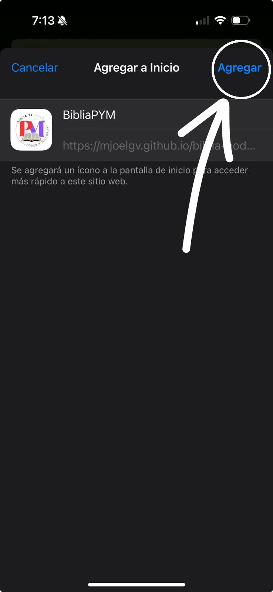
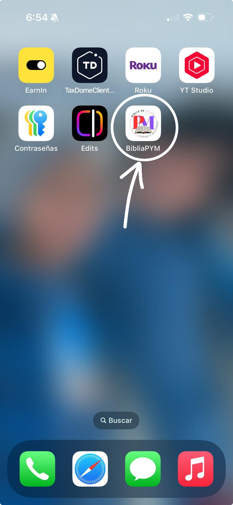

×


¡Instala la Biblia en tu iPhone!
Sigue estos sencillos pasos para agregar la Biblia de Poder y Milagros a tu pantalla de inicio:
1
Presiona el botón Compartir (el ícono de caja con flecha hacia arriba) en la parte inferior de la pantalla.
2
Desliza hacia arriba y selecciona Agregar a Inicio.
3
Presiona Agregar en la esquina superior derecha para confirmar.
4
¡Listo! El ícono de la Biblia de Poder y Milagros aparecerá en tu pantalla de inicio.
